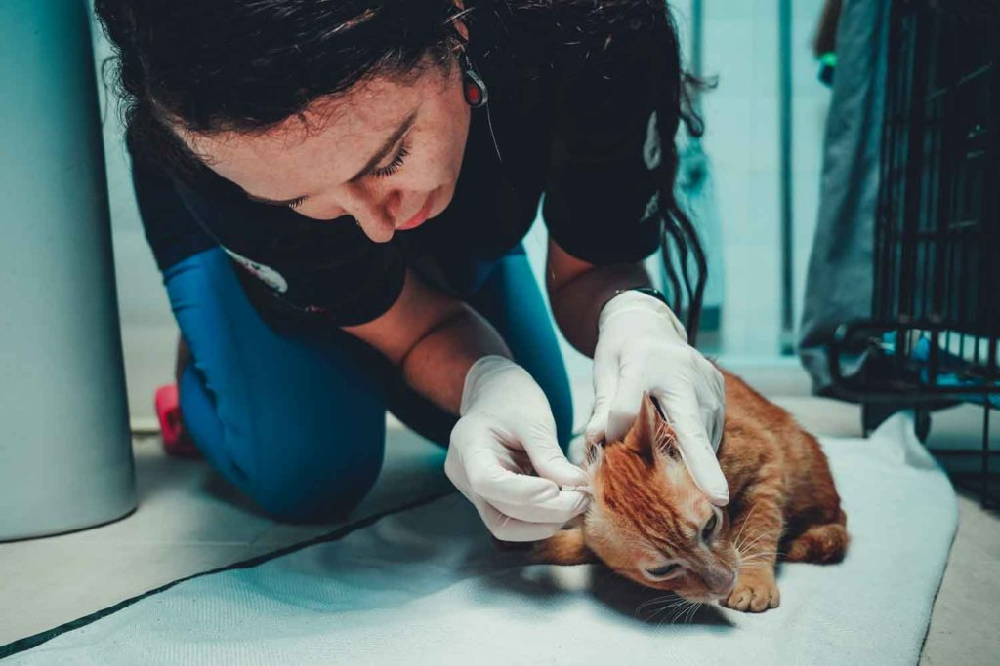

Chăm sóc phòng ngừa
Phòng ngừa ký sinh trùng là một phần quan trọng trong việc chăm sóc mèo của bạn - chúng sẽ cần được chăm sóc phòng ngừa thường xuyên để đảm bảo sức khỏe cho cả bạn và chúng. Có hai loại ký sinh trùng chính: bên ngoài và bên trong. Ký sinh trùng bên ngoài bao gồm bọ chét, ve và ve. Ký sinh trùng bên trong bao gồm các loại giun như giun tròn, sán dây, giun đũa và giun tim.Các dấu hiệu phổ biến của bọ chét, ve và ve bao gồm:
- Gãi – khi có bọ chét, gãi cơ thể, hoặc bị ve tai gãi tai hoặc giữ tai phẳng và lắc đầu.
- Bọ chét (đốm nâu trên lông)
- Chất khô màu nâu/đen trong tai có thể là dấu hiệu của ve tai.
- Có thể nhìn thấy hoặc cảm nhận được bọ ve trên cơ thể mèo.Ký sinh trùng bên ngoài có thể gây thiếu máu (nướu nhợt nhạt, thiếu năng lượng).
Các dấu hiệu phổ biến của giun ở mèo bao gồm:
- Nôn mửa (đôi khi có giun trong chất nôn)
- Tiêu chảy (có hoặc không có máu)
- Phân hắc ín hoặc nhầy
- Giảm cân
- Bụng chướng
- Tình trạng cơ thể kém và bộ lông xỉn màu
Khi sự lây nhiễm trở nên trầm trọng hơn và các triệu chứng tiến triển, bạn có thể thấy các dấu hiệu như:
- Yếu đuối
- mất nước
- Môi và nướu nhợt nhạt do thiếu máu
- Huyết áp thấp
- Sốc
- Tử vong, trong trường hợp nặng nhất
Sự đối đãi
Người nuôi mèo nên sử dụng các loại thuốc trị ký sinh trùng phổ rộng bao gồm thuốc diệt bọ chét và tẩy giun thích hợp. Lý tưởng nhất là mèo của bạn nên được phòng ngừa ký sinh trùng 3 tháng một lần. Mèo con nên được tẩy giun 2 tuần một lần cho đến khi chúng được 12 tuần tuổi, sau đó mỗi tháng một lần cho đến khi chúng được sáu tháng tuổi. Điều quan trọng cần lưu ý là không nên sử dụng thuốc trị bọ chét cho mèo con cho đến khi chúng được hơn 8-10 tuần tuổi. Thay vào đó, bạn nên cho mèo con tắm bọ chét. Không nên sử dụng thuốc trị bọ chét cho mèo vì nó có thể gây độc. Nói chuyện với bác sĩ thú y về phương pháp điều trị tốt nhất cho mèo của bạn.Ngoài ra, có thể thực hiện theo các bước sau:
- Kiểm tra thú y hàng năm
- Xét nghiệm giun tim có thể được tiến hành định kỳ.
- Cung cấp thực phẩm nấu chín hoặc chế biến sẵn (không phải thịt sống) và nước ngọt.
- Việc kiểm tra phân có thể được tiến hành 2 đến 4 lần trong năm đầu đời và 1 đến 2 lần mỗi năm đối với người lớn, tùy thuộc vào các yếu tố sức khỏe và lối sống của thú cưng.
BÌNH LUẬN cho Paws for Compassion để giành được một phần trong khoản trợ cấp 500.000 USD. Tất cả bạn phải làm là bỏ phiếu!
Mỗi đô la đều được tính là một phiếu bầu để bạn có thể quyên góp và bỏ phiếu!